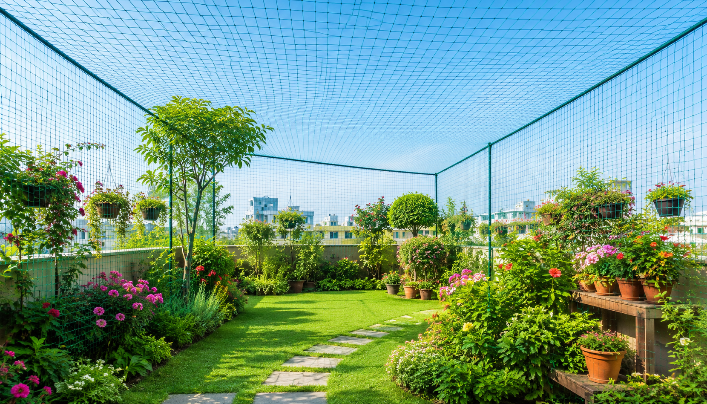
Kenny Safety Nets provides premium Garden Safety Net installation in Bangalore using high-strength UV-resistant safety nets. Protect your gardens, plants, flowers and landscaped areas from birds and unwanted animals while maintaining natural sunlight, ventilation and the beauty of your outdoor space.
Years Experience
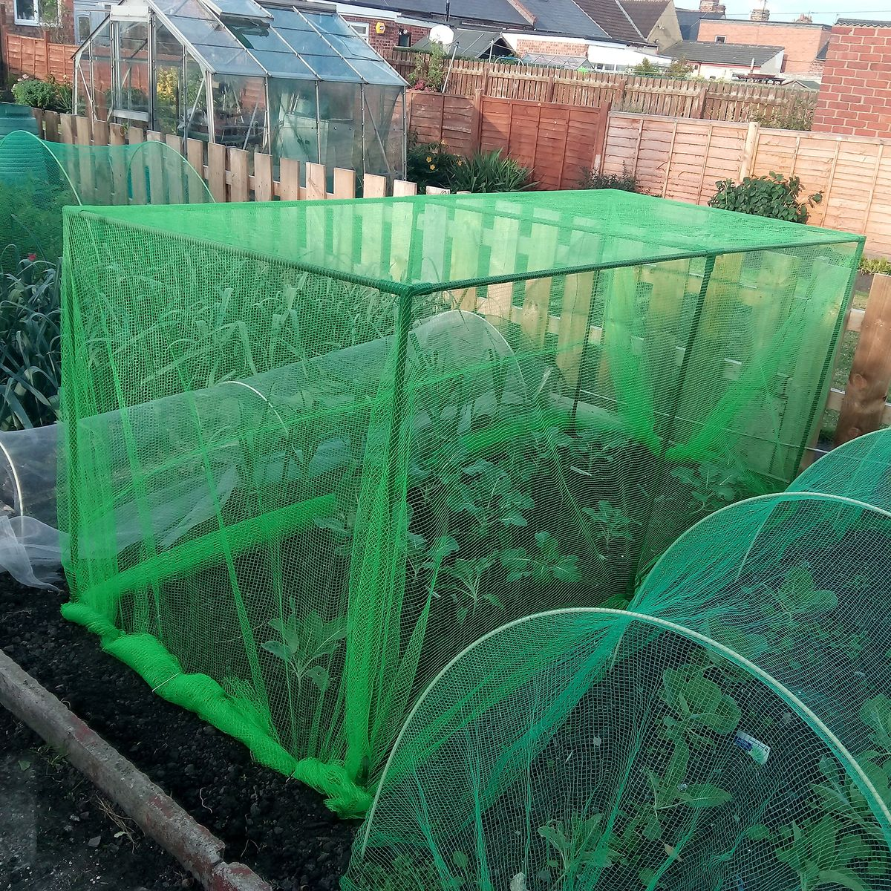
Years of Professional Experience
Kenny Safety Nets provides premium Garden Safety Net installation services across Bangalore using high-quality UV-resistant HDPE safety nets. Our professionally installed garden safety nets protect plants, flowers, vegetables and landscaped areas from birds and unwanted animals while creating a safe outdoor environment for children and pets without affecting natural sunlight, airflow or the beauty of your garden.
Kenny Safety Nets provides premium UV-resistant Garden Safety Nets in Bangalore to protect gardens, plants, flowers, vegetables and landscaped areas from birds and unwanted animals. Our heavy-duty HDPE garden safety nets are professionally installed to ensure long-lasting protection while allowing natural sunlight, fresh air and healthy plant growth throughout the year.
Safeguards flowers, vegetables, fruit plants and landscaped gardens from birds and unwanted animals.
Prevents pigeons, crows, monkeys and other animals from damaging plants while keeping your garden clean.
Manufactured using premium UV-stabilized HDPE material for superior durability and long-lasting outdoor performance.
Designed to withstand harsh sunlight, heavy rain, strong winds and changing weather without losing strength or quality.
Strong, high-quality garden safety nets provide reliable protection while maintaining airflow and natural sunlight.
Installed by experienced technicians using secure fixing methods for maximum durability and long-term garden protection.
Kenny Safety Nets provides professional Garden Safety Net installation across residential, commercial, institutional and recreational properties in Bangalore. Our premium UV-resistant Garden Safety Nets protect plants, flowers, vegetables and landscaped areas from birds and unwanted animals while maintaining natural sunlight, ventilation and the beauty of your outdoor spaces.
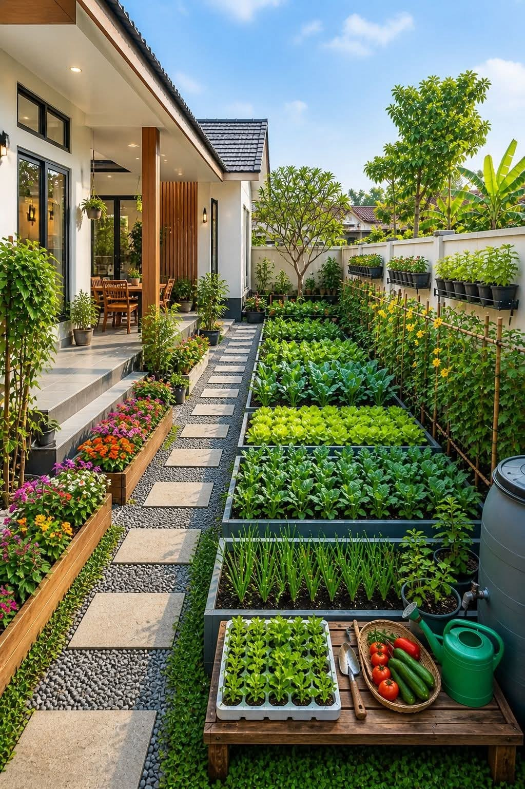
Protect home gardens, flower beds, vegetable gardens and landscaped areas from birds and unwanted animals with professionally installed Garden Safety Nets.
Call Now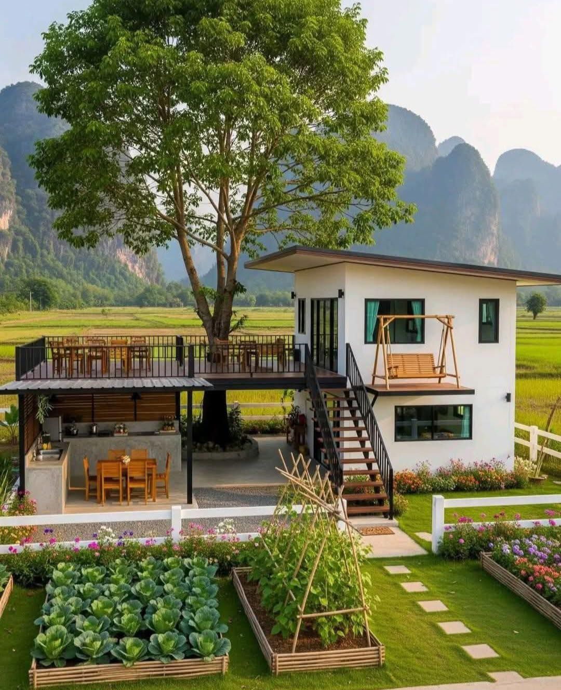
Protect large villa gardens, landscaped lawns and farmhouse plantations from birds and animals while preserving the natural beauty of your property.
Call NowKeep community gardens, landscaped parks and green spaces protected from birds while maintaining a clean and attractive environment for residents.
Call Now
Protect landscaped gardens, outdoor lawns and recreational spaces from bird damage while preserving a beautiful and welcoming environment.
Call Now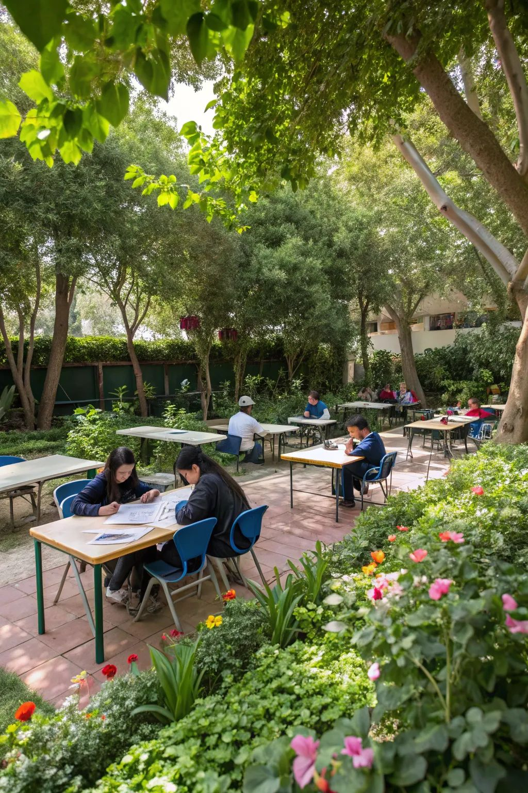
Protect campus gardens, playground landscapes and educational green spaces from birds while maintaining healthy and attractive surroundings.
Call Now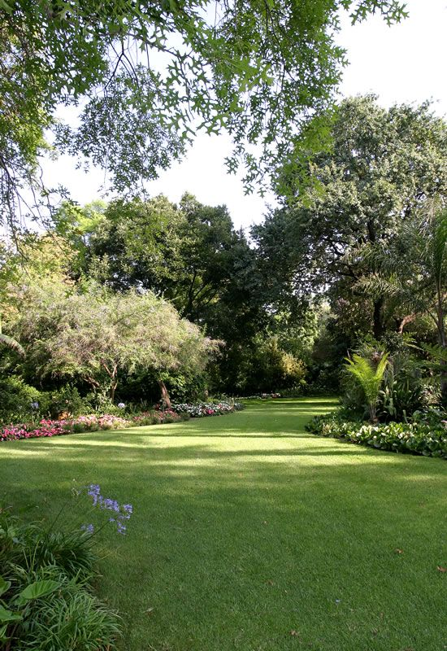
Ideal for offices, business parks, restaurants, hospitals and commercial landscapes where gardens require reliable bird and animal protection.
Call NowKenny Safety Nets follows a professional installation process to ensure your Garden Safety Nets are securely installed using premium UV-resistant HDPE materials. Our experienced technicians provide reliable protection for gardens, lawns, plants and landscaped areas from birds and unwanted animals across residential, commercial and institutional properties throughout Bangalore.
Call or WhatsApp Kenny Safety Nets to schedule a FREE site inspection anywhere in Bangalore at your preferred time.
Our experts inspect your garden, landscaped area, plants and surrounding environment to recommend the most suitable Garden Safety Net solution.
We carefully measure the garden area, boundary size and installation points to ensure complete coverage and a perfect fit.
Our experienced technicians install premium UV-resistant Garden Safety Nets using secure fixing methods for maximum durability and long-lasting protection.
Every installation undergoes a complete quality inspection to ensure proper tension, secure fixing and effective protection for your garden.
Enjoy a clean, healthy and well-protected garden with premium Garden Safety Nets that safeguard plants, flowers and landscaped areas throughout the year.
Explore some of our recently completed Garden Safety Net installation projects across Bangalore. Kenny Safety Nets installs premium UV-resistant Garden Safety Nets for homes, villas, apartments, parks, schools and commercial properties, protecting gardens, lawns, plants and landscaped areas from birds and unwanted animals while maintaining their natural beauty throughout the year.
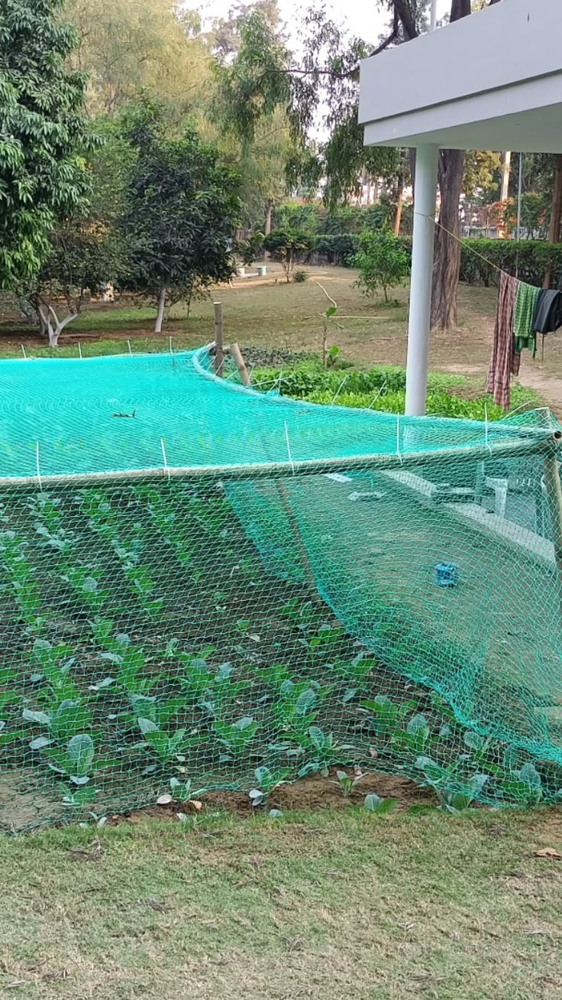
Premium Garden Safety Nets installed at a residential property to protect flowers, plants and landscaped gardens from birds and unwanted animals.
Call Now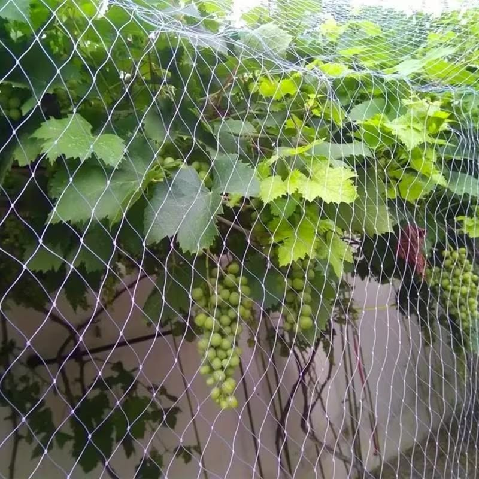
Heavy-duty Garden Safety Nets installed in a luxury villa to protect landscaped gardens, decorative plants and outdoor green spaces.
Call Now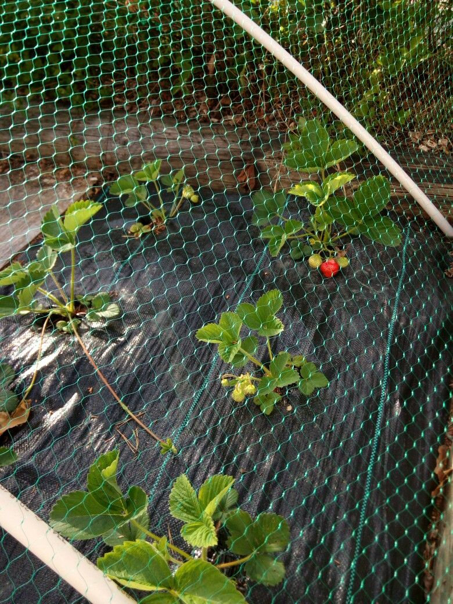
Professionally installed Garden Safety Nets protecting apartment gardens, lawns and landscaped common areas from birds and pests.
Call Now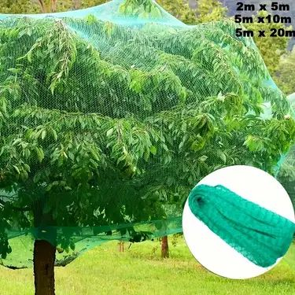
Premium Garden Safety Nets installed in public parks and landscaped gardens to preserve plants while maintaining a clean and attractive environment.
Call Now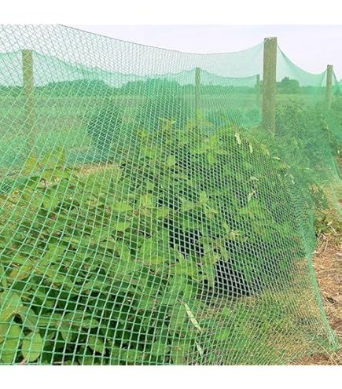
Durable Garden Safety Nets installed around school gardens and green spaces to protect plants while providing a safe and beautiful environment.
Call Now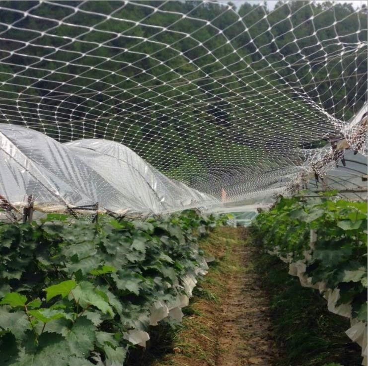
Heavy-duty Garden Safety Nets installed for offices, hotels and commercial landscapes to protect plants and maintain beautiful outdoor spaces year-round.
Call NowRead genuine reviews from homeowners, villa owners, apartment associations, schools, parks and commercial property owners across Bangalore who trusted Kenny Safety Nets for professional Garden Safety Net installation. Our premium UV-resistant Garden Safety Nets protect plants, flowers and landscaped areas from birds and unwanted animals while maintaining the beauty of every outdoor space.
5000+ Happy Customers Across Bangalore
"Kenny Safety Nets installed Garden Safety Nets in our home garden, and our flowers and plants are now protected from birds. Excellent workmanship and premium quality materials."
"The Garden Safety Nets blend perfectly with our villa landscape. The installation was neat, quick and completed on time. Highly recommended."
"Strong UV-resistant Garden Safety Nets with professional installation. Our apartment garden is now protected from pigeons without affecting sunlight or ventilation."
"We installed Garden Safety Nets in our landscaped park, and the results are excellent. The plants are protected while the garden still looks beautiful and natural."
"Affordable pricing, quick installation and durable HDPE Garden Safety Nets. Our garden stays clean and protected throughout the year."
"From the free site inspection to the final installation, everything was handled professionally. Kenny Safety Nets is the best choice for Garden Safety Nets in Bangalore."
Find answers to the most common questions about Garden Safety Nets in Bangalore, including pricing, installation, materials, durability, maintenance and garden protection solutions for homes, villas, apartments, schools, parks, farmhouses and commercial properties.

The cost depends on the size of your garden, installation area and project requirements. Kenny Safety Nets offers FREE site inspection and customized quotations anywhere in Bangalore.
Garden Safety Nets protect plants, flowers, vegetables and landscaped areas from birds and unwanted animals while allowing natural sunlight, fresh air and healthy plant growth.
We install premium UV-stabilized HDPE and high-strength nylon safety nets that are weather-resistant, durable and designed for long-term outdoor use.
Most Garden Safety Net installations are completed within a few hours or on the same day, depending on the size of the garden and installation requirements.
We provide Garden Safety Net installation throughout Bangalore, including Whitefield, HSR Layout, John Nagar, Koramangala, Indiranagar, Marathahalli, Bellandur, Sarjapur Road, 4th T Block East, Jayanagar, Hebbal, Yelahanka, Banashankari, BTM Layout, RR Nagar, Bannerghatta Road and surrounding locations.
Our Garden Safety Nets are ideal for home gardens, villas, apartments, schools, parks, farmhouses, resorts, hotels, office campuses, commercial landscapes and public gardens.
Yes. Our UV-resistant Garden Safety Nets are designed to withstand harsh sunlight, rain, wind and changing weather conditions while maintaining excellent strength and durability for many years.
Simply call us or contact us on WhatsApp. Our experts will schedule a FREE site inspection, recommend the best Garden Safety Net solution and provide fast, professional installation at your location.
Still have questions? Contact Kenny Safety Nets today for expert guidance on Garden Safety Nets in Bangalore. We provide FREE consultation, site inspection and professional Garden Safety Net installation for homes, villas, apartments, schools, parks, farmhouses and commercial properties across Bangalore.
Kenny Safety Nets provides premium Garden Safety Net installation across homes, villas, apartments, resorts, schools, farmhouses and commercial properties throughout Bangalore. We offer free site inspection, quick response and professional installation in all major locations.
Looking for professional Garden Safety Net installation in Bangalore? Contact Kenny Safety Nets today for a FREE site inspection, expert consultation and premium UV-resistant Garden Safety Nets. We provide fast, reliable and same-day installation to protect gardens, plants, flowers and landscaped areas from birds and unwanted animals.
+91 9032544223
Available 24×7Instant Quote & Site Booking
Replies Within Minutesjohnbondhi14@gmail.com
We'll reply within 24 hoursBangalore, Karnataka
Serving All Major LocationsMonday - Sunday
24 Hours